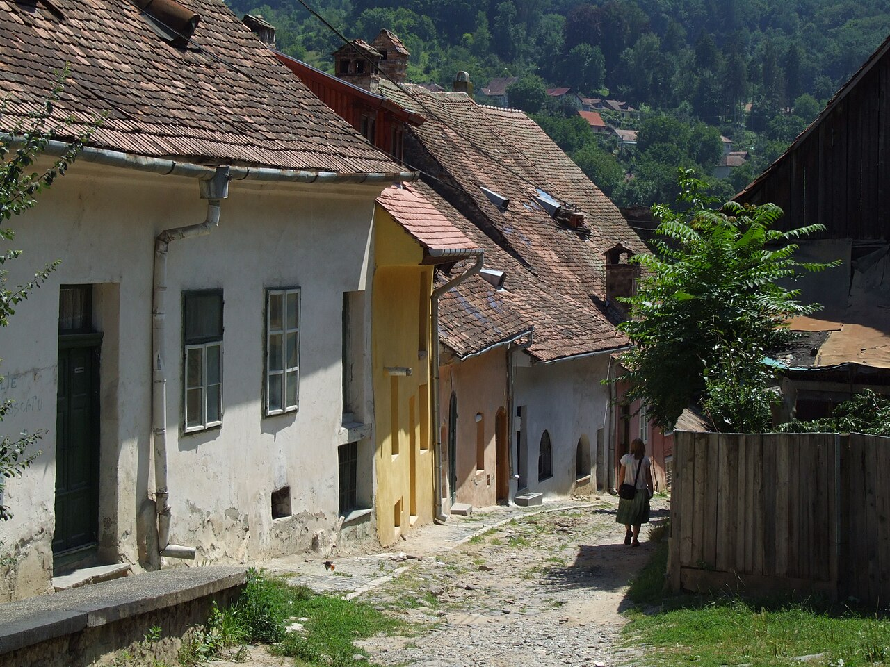
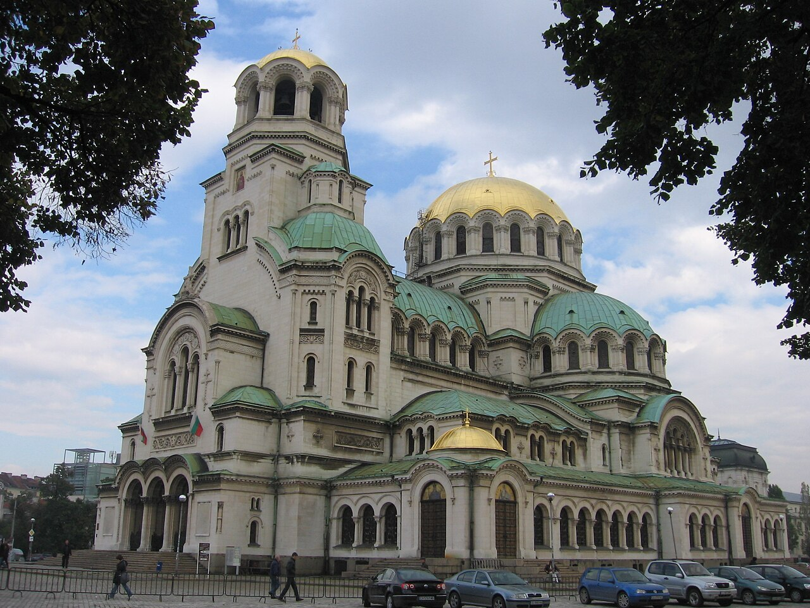

소피아 플로브디프
일반- 수단
- 버스 · 직행 버스(중앙 버스터미널)
- 소요
- 약 2시간 15분
- 환승
- 직행
1시간 간격, 2시간~2시간 20분. 기차는 2시간 30분~3시간.
공항 도시에서 첫 숙박지까지의 이동입니다.
루마니아·불가리아
Plovdiv – Sofia – Thessaloniki
불가리아 두 도시에서 남쪽으로 내려가 에게해의 테살로니키에서 끝내는 코스.


소피아 공항으로 들어가 플로브디프를 먼저 본 뒤 소피아에 머물며 릴라 수도원을 다녀오고, 버스로 테살로니키(약 5시간)에 가서 바다를 보고 출국합니다.


지도: © OpenStreetMap 기여자
현지 6박 7일 · 플로브디프 2박 → 소피아 2박 → 테살로니키 2박
도착 인천 → 소피아 공항 → 플로브디프 (버스 약 2시간 15분). 도착일은 숙소 주변 위주로 가볍게.
로마 원형극장 → 구시가지 부흥기 저택 → 네베트 테페 → 로마 경기장 → 카파나 창작 지구.
숙박: 플로브디프
바치코보 수도원 + 아세노프 요새(버스·택시), 또는 트라키아 와이너리 시음.
숙박: 플로브디프
이동 플로브디프 → 소피아 · 버스 약 2시간 15분 일반
알렉산드르 네프스키 대성당 → 성 소피아 교회 → 러시아 교회 → 세르디카 로마 유적 → 바냐 바시 모스크·광천수 샘 → 비토샤 대로.
숙박: 소피아
투어 또는 버스로 릴라 수도원(유네스코, 편도 약 2시간) → 보야나 교회와 묶는 일정이 일반적.
대중교통 직행은 하루 1편 수준이라 투어·셔틀이 편합니다.
숙박: 소피아
이동 소피아 → 테살로니키 · 버스 약 4시간 45분 확인
화이트 타워 → 해안 산책로 → 아리스토텔레스 광장 → 아기오스 디미트리오스 교회 → 로톤다·갈레리우스 개선문.
비잔틴 기념물들이 유네스코 세계유산입니다.
숙박: 테살로니키
아노 폴리(윗마을) 성벽 전망 → 모디아노·카파니 시장 → 해 질 녘 해안에서 우산 조형물까지 산책.
숙박: 테살로니키
오전에 못 본 곳을 둘러보고 공항으로 이동합니다. 귀국편은 대부분 다음 날 한국에 도착합니다.
1시간 간격, 2시간~2시간 20분. 기차는 2시간 30분~3시간.
공항 도시에서 첫 숙박지까지의 이동입니다.
1시간 간격, 2시간~2시간 20분. 기차는 2시간 30분~3시간.
4시간 40분~5시간 15분. 직행 열차는 없습니다.
국경 모두 솅겐 지역이라 평소 국경 심사가 없습니다.
이스탄불·프랑크푸르트·뮌헨·비엔나·도하 등에서 1회 경유.
이스탄불·아테네·뮌헨·프랑크푸르트 등에서 1회 경유.
5·9·10월
1~2월
봄·가을이 걷기 좋습니다.



중기·장기(7~8박) · 1개국 · 추천 5·9·10월
카르파티아 산맥 너머 색슨인의 요새 도시 세 곳. 루마니아 여행의 대표 동선.
.jpg?width=960)
_exterior_-_IMG_01.jpg?width=960)

장기(8~9박) · 1개국 · 추천 7·8·9월
"세계 최고의 드라이브 길"로 불리는 고산도로를 넘어 트란실바니아를 한 바퀴 도는 여름 로드트립.

_(37448099450).jpg?width=960)

단기·중기(4~5박) · 1개국 · 추천 4·5·10월
수도와 유네스코 수도원, 로마 극장이 남은 고도. 4~6박으로 보는 불가리아 입문.

_-_Tsarevets.JPG?width=960)

중기·장기(7~8박) · 2개국 · 추천 5·9월
도나우를 건너 불가리아의 옛 수도들을 따라 내려가는 두 나라 코스.
정보 확인일 2026-11-21